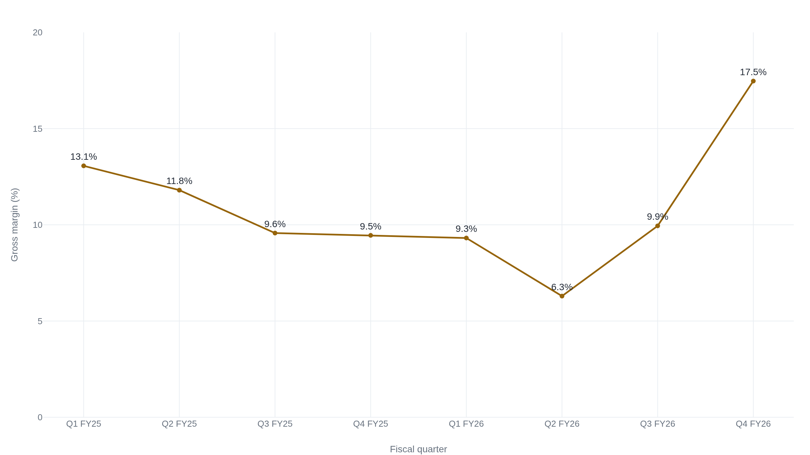
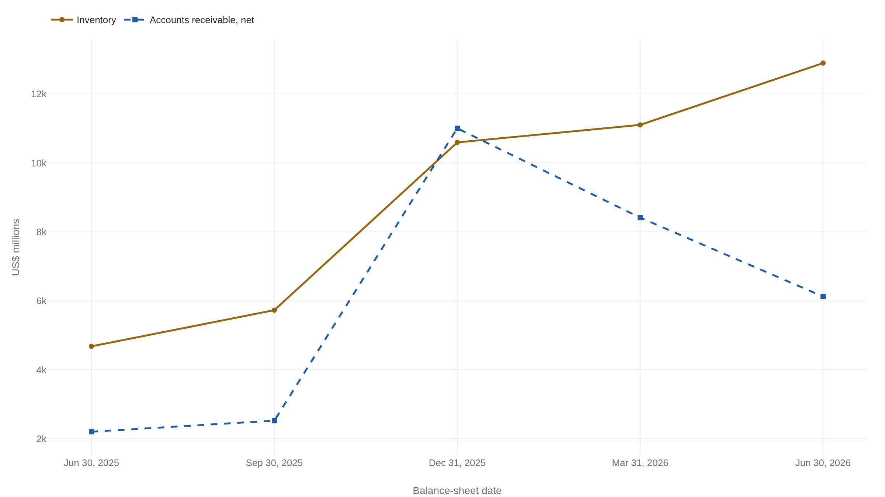

Super Micro reported $2.2 billion in net income. Its operating cash flow was negative $6.8 billion.
The company's own cash-flow statement shows why: fiscal 2026 revenue grew 78%, and the growth went into inventory and receivables instead of the bank.
The filing behind the headline number
Super Micro Computer reported fiscal 2026 fourth-quarter results on August 11, 2026. Net sales were $11.12 billion. GAAP gross margin was 17.5%, on gross profit of $1.94 billion, against 9.5% in the same quarter a year earlier.1 The quarter just before it, fiscal 2026's third, had come in at 9.9%.2
That fourth figure is the first complication. Full-year fiscal 2026 gross margin was 10.8%, barely above fiscal 2025's 11.1%.1 The fiscal year the record quarter belongs to did not experience the jump the quarter did. Two questions follow from that gap. One is how much of the fourth quarter is likely to repeat. The other is whether the revenue behind it is turning into cash Super Micro controls, or into inventory and receivables still sitting on its balance sheet. The company's own filings answer one of those questions directly and leave the other only partly resolved.
The spread an assembler keeps
Super Micro does not design the processors, GPUs, memory, or networking silicon that go into the servers it sells. It buys those parts from Nvidia, AMD, Intel, and other vendors. It configures them into a rack-scale system built around a customer's workload, adds cooling (increasingly direct liquid cooling piped straight to the chip, for the density AI training and inference racks need), and ships the finished machine.3 Gross margin on that business is not a markup on intellectual property. It is the spread between what the parts and labor cost and what the configured system sells for, and that spread is the entire gross margin line.
That is also why the margin has run thin for most of the company's recent history. Announcing the results, founder and CEO Charles Liang attributed the quarter's improvement to "a richer enterprise customer mix and broader adoption of our optimized Data Center Building Block Solutions® (DCBBS) architecture."1 Both phrases point at the same lever: which customers and which configurations Super Micro sells in a given quarter, not a structural change in what an integrator does or what it can charge for doing it. A quarter weighted toward high-volume, GPU-heavy deals for a handful of large buyers carries a thinner spread than one weighted toward smaller enterprise orders with more configuration work attached. Which kind of quarter fiscal 2026's fourth one actually was is what the verified numbers, not the press release, have to answer.
Why the fourth quarter reads as an outlier
Chart 1 places the just-reported quarter against the seven that came before it. Margin fell in five consecutive quarters, from 13.1% in the first quarter of fiscal 2025 to 6.3% in the second quarter of fiscal 2026, the series' low point, before turning up to 9.9% and then to 17.5%.1245 A single quarter above a range the business held for two years does not by itself establish a new level.

Super Micro's own preliminary update, filed six days before the final results, already told a version of this story. The company had originally guided fourth-quarter gross margin to 8.2%-8.4%. By August 5 it revised that estimate to 15%-17%, citing "a favorable customer and product mix."6 The final 17.5% GAAP print landed just above the top of that revised range. The market's surprise on August 11 should be read against that timing: Super Micro had already signaled most of the size of the beat, if not the exact number, six days earlier.
Two independent accounts of the August 11 earnings call attribute roughly three-quarters of the quarter's 750-basis-point sequential margin jump to a shift in customer mix, including large contracts pushed from the fourth quarter into the first quarter of fiscal 2027, and the remaining quarter to lower tariffs and inventory-reserve reversals. The same accounts report CFO David Weigand guiding first-quarter fiscal 2027 gross margin to roughly 10.4%-10.8%, near the range Super Micro held for most of the past two years.78 None of that breakdown or that guidance number appears in the SEC filing or the investor-relations release. A full-text search of the primary exhibit finds no gross-margin percentage in it at all.1
The verified quarterly series and the reported guidance point the same way. Four margin quarters below 10% preceded this one, and the fiscal year barely moved. If the two accounts of Weigand's guidance have it right, the very next quarter goes back to single digits. None of that rules out real progress inside the number: a higher-margin DCBBS mix is a real product line, not a one-time item. But the evidence available now reads as one strong quarter inside a still-thin-margin business, not a rebasing of what Super Micro earns on a server.
Where the revenue growth went instead of the bank
Revenue answers one part of the question already. Fiscal 2026 net sales were $39.06 billion, up 78% from fiscal 2025's $21.97 billion.1 Whether that growth produced cash is a separate question, and the filing's own cash-flow statement answers it directly. Fiscal 2026 net income was $2.23 billion. Operating cash flow for the same year was negative $6.81 billion, a gap of roughly $9.0 billion between the profit Super Micro reported and the cash its operations actually generated.1
The gap sits almost entirely in two balance-sheet lines: inventory and accounts receivable, the assets that grow whenever an assembler buys parts and extends credit ahead of getting paid. Inventory absorbed $8.88 billion of cash during the year. Receivables absorbed another $3.92 billion. A $0.96 billion net increase in accounts payable, suppliers extending Super Micro credit in turn, was the only large working-capital line that ran the other way.1

The two lines moved differently in the second half of the fiscal year. Receivables peaked at $11.00 billion on December 31, 2025, and fell to $6.13 billion by June 30, 2026, as customers paid down what they owed faster than new receivables replaced it. Inventory did not reverse. It kept climbing through the fourth quarter, reaching $12.90 billion at fiscal year-end, its highest point in the series.1
The full-year $0.96 billion net increase in payables hides two opposite halves. In the first six months of fiscal 2026, payable balances rose $12.47 billion, meaning suppliers effectively financed roughly that much of the first half's growth.4 Subtracting that six-month figure from the full-year number implies payables fell by about $11.50 billion in the second half, a figure not stated directly in any single filing but computed from two that are.14 Super Micro built the first half of the year's growth on its suppliers' terms, then spent the second half paying most of it back.
| SOURCE | AMOUNT | FISCAL 2026 |
|---|---|---|
| Operations | $(6.81)B | Cash used by operating activities, net of the inventory and receivables build. |
| New debt | $4.47B | Proceeds from new lines of credit and term loans. |
| New equity | $4.23B | A new class of mandatory convertible preferred stock that did not exist a year earlier. |
The $9.48 billion Super Micro raised through financing activities in fiscal 2026 is what actually covered the shortfall operations left: new debt, a new class of preferred stock, and smaller items besides.1 The revenue surge happened. What it produced, in fiscal 2026, was a bigger balance sheet financed by new capital, not cash the business generated on its own.
The scrutiny this quarter inherits
A sudden margin improvement invites more scrutiny at Super Micro than it would at a company with a cleaner recent record, because Super Micro's own record includes two years of exactly the kind of dispute a margin swing could hide. In August 2024, short seller Hindenburg Research published allegations of channel stuffing, premature revenue recognition, and undisclosed related-party transactions with two entities it said were controlled by the CEO's brothers.9 Hindenburg disclosed a short position in Super Micro when it published. The allegations are the accuser's claims, not independently verified findings, and Super Micro has not been found to have committed the conduct described.
What is established in Super Micro's own SEC filings is narrower, and still serious. The company's fiscal 2024 annual report, delayed nearly six months, disclosed five categories of material weakness in internal controls: information-technology controls, segregation of duties, and the review of manual journal entries, related-party transactions, and new leases among them.10 Management concluded the underlying financial statements still fairly presented the company's results, and the filing's cover page shows no restatement of prior results. Ernst & Young, the auditor partway through that year's audit, resigned in October 2024, saying it could no longer rely on management's and the audit committee's representations.11 A board special committee investigated and reached the opposite conclusion. It found no material concern about management's or the audit committee's integrity. And it stated plainly that it did not believe EY's resignation or its conclusions "is supported by the facts uncovered by the Special Committee or the findings set forth in the Special Committee's report."12 Both statements are on the record, from named parties in a position to know, and they contradict each other. Super Micro regained Nasdaq listing compliance in February 2025 after filing the delayed report and two overdue quarterlies.13
A separate matter, unconnected in the public record to any of the above, reached federal court in March 2026. On March 19, the U.S. Attorney's Office for the Southern District of New York unsealed an indictment charging three people with conspiring to route roughly $2.5 billion of servers to China in violation of U.S. export controls between 2024 and 2025.1415 The three: Yih-Shyan "Wally" Liaw, then a Super Micro co-founder, board member, and senior vice president of business development; Ruei-Tsang "Steven" Chang, a Super Micro sales manager in Taiwan; and Ting-Wei "Willy" Sun, a contractor.1416 Super Micro was not named as a defendant. In its own SEC filing, the company said the conduct alleged "is a contravention of the Company's policies and compliance controls" and that it "maintains a robust compliance program." Liaw resigned from Super Micro's board the next day, March 20, in a departure the company stated was "not the result of a disagreement with the Company."17 CEO Charles Liang later called Super Micro "a victim of the scheme itself" and said the company had engaged outside counsel and a forensic consultant for an internal review.18 Nothing in the public record ties the export-control charges against Liaw, Chang, and Sun to Super Micro's reported revenue, inventory, or margin figures, and none of this piece's numbers should be read as connected to them. It is a live, unresolved matter involving a senior insider during the same fiscal years this analysis covers.
Two of the questions this quarter raised have answers already sitting in Super Micro's own filings. The cash question is fully answered: fiscal 2026 profit did not turn into cash, and the difference sits in inventory and receivables the company financed with new debt and new preferred stock rather than cash from operations. The margin question is not fully answered, but the verified quarterly record and the guidance reported from the earnings call both point toward a mix-driven quarter inside a still-thin-margin business, rather than a new level Super Micro has moved to. The fiscal 2027 guidance, $65 billion to $72 billion in revenue and a record order backlog behind it, is Super Micro's own claim about what comes next, not yet a number a filing has delivered on.1 Whether the growth becomes a business that converts revenue into cash, rather than one that converts it into inventory and receivables, will show up in the fiscal 2027 cash-flow statement the way this year's did in fiscal 2026's: as a number next to net income, not as a percentage in a press release.
Sources
- U.S. SEC / Super Micro Computer, Inc. · Form 8-K Exhibit 99.1, fourth-quarter and full-year fiscal 2026 results (filed 2026-08-11)
- U.S. SEC / Super Micro Computer, Inc. · Form 10-Q for the quarter ended March 31, 2026
- U.S. SEC / Super Micro Computer, Inc. · Form 10-K for fiscal year ended June 30, 2025
- U.S. SEC / Super Micro Computer, Inc. · Form 10-Q for the quarter ended December 31, 2025
- U.S. SEC / Super Micro Computer, Inc. · Form 10-Q for the quarter ended September 30, 2025
- U.S. SEC / Super Micro Computer, Inc. · Form 8-K exhibit, preliminary fourth-quarter fiscal 2026 business update (filed 2026-08-05)
- Investing.com · "Earnings call transcript: Supermicro tops Q4 profit estimates, shares rise after hours"
- BiGGo Finance · Super Micro Q4 FY2026 earnings-call coverage, 2026-08-11
- Hindenburg Research · "Super Micro: Fresh Evidence of Accounting Manipulation..." (2024-08-27)
- U.S. SEC / Super Micro Computer, Inc. · Form 10-K for fiscal year ended June 30, 2024 (filed 2025-02-25)
- U.S. SEC / Super Micro Computer, Inc. · Form 8-K, Item 4.01, auditor resignation (filed 2024-10-30)
- U.S. SEC / Super Micro Computer, Inc. · Form 8-K, Items 5.02/8.01, Special Committee findings (filed 2024-12-02)
- U.S. SEC / Super Micro Computer, Inc. · Form 8-K, Item 3.01, Nasdaq compliance regained (filed 2025-02-26)
- Al Jazeera · "Three charged in the US with smuggling AI chips into China" (2026-03-20)
- Gizmodo · "Super Micro Co-Founder Charged With Smuggling $2.5 Billion of AI Tech Into China" (2026-03-20)
- U.S. SEC / Super Micro Computer, Inc. · Form 8-K Exhibit 99.1, statement on the U.S. Attorney's Office action (filed 2026-03-20)
- U.S. SEC / Super Micro Computer, Inc. · Form 8-K, Item 5.02, Liaw board resignation (filed 2026-03-20)
- Yahoo Finance · "Supermicro launches internal probe [of] cofounder" (2026-04-07)